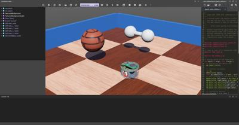
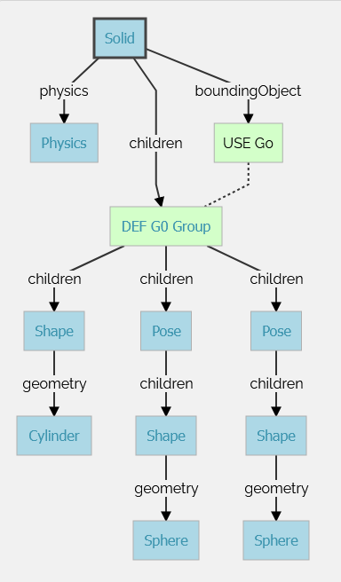

Tutorial4 <<
Previous Next >> Stage3
Tutorial5
導引課程 5：複合固體和物理屬性
本導引課程的目的是通過創建一個具有多個邊界對象的固體來更詳細地探索物理模擬：一個由兩個球體和一個圓柱體組成的啞鈴。預期結果如圖所示。

預期結果在教程結束時，您將能夠創建一個由兩個球體和一個圓柱體組成的啞鈴，如圖所示。
新的模擬
實作練習 #1：從上一個教程的結果開始，並通過使用表單 File / Save World As.... 創建一個名為 compound_solid.wbt 的新模擬。
It is possible to build Solid nodes more complex than what we have seen before by aggregating Shape nodes. In fact, both the physical and the graphical properties of a Solid can be made of several Shape nodes. Moreover each Shape node can be placed in a Pose node in order to change its relative position and orientation. Group nodes can also be used to group several sub-nodes.
We want to implement a dumbbell made of a handle (Cylinder) and of two weights (Sphere) located at each end of the handle. This figure depicts the Solid nodes and its sub-nodes required to implement the dumbbell.
Hands on #2: Create the dumbbell by following the figure. Create the handle first without placing it in a Pose node (so the handle axis will have the same direction as the z-axis of the solid). The handle should have a length of 0.1 m and a radius of 0.01 m. The weights should have a radius of 0.03 m and a subdivision of 2. The weights can be moved at the handle extremities thanks to the translation field of their Pose nodes.

representation of the subnodes of a compound solid made of several transformed geometries.
The aim of this subsection is to learn how to set some simple physics properties for a Solid node. The Physics node contains fields related to the physics of the current rigid body (Solid).
The mass of a Solid node is given by its density or mass field. Only one of these two fields can be specified at a time (the other should be set to -1). When the mass is specified, it defines the total mass of the solid (in [kg]). When the density is specified, its value (in [kg/m3]) is multiplied by the volume of the bounding objects, and the product gives the total mass of the solid. A density of 1000 [kg/m³] corresponds to the density of water (default value).
Hands on #3: Set the mass of the dumbbell to 2 [kg]. The density is not used and should be set to -1.
By default, the center of mass of a Solid node is set at its origin (defined by the translation field of the solid). The center of mass can be modified using the centerOfMass field of the Physics node. The center of mass is specified relatively to the origin of the Solid.
Hands on #4: Let's say that one of the weights is heavier than the other one. Move the center of mass of the dumbbell of 0.01 [m] along the z-axis.
Note that when the solid is selected, the center of mass is represented in the 3D view by a coordinate system which is darker than the coordinate system representing the solid center.
The rotation field of the Pose node determines the rotation of this node (and of its children) using the Euler axis and angle representation. A Euler axis and angle rotation is defined by four components. The first three components are a unit vector that defines the rotation axis. The fourth component defines the rotation angle about the axis (in [rad]).
The rotation occurs in the sense prescribed by the right-hand rule.
Hands on #5: Modify the rotation of the Solid node of the dumbbell in order to move the handle's axis (z-axis) parallel to the ground. A unit axis (0, 1, 0) and an angle of π/2 (~ 1.5708) is a possible solution.
As said before, minimizing the number of bounding objects increases the simulation speed. However, choosing the bounding objects primitives carefully is also crucial to increase the simulation speed.
Using a combination of Sphere, Box, Capsule and Cylinder nodes for defining objects is very efficient. Generally speaking, the efficiency of these primitives can be sorted like this: Sphere > Box > Capsule > Cylinder, where the Sphere is the most efficient. But this can be neglected under common usage.
The IndexedFaceSet geometry primitive can also be used in a bounding object. But this primitive is less efficient than the other primitives listed above. Moreover its behavior is sometimes buggy. For this reasons, we don't recommend using the IndexedFaceSet when another solution using a combination of the other primitives is possible.
Grounds can be defined using the Plane or the ElevationGrid primitives. The Plane node is much more efficient than the ElevationGrid node, but it can only be used to model a flat terrain while the ElevationGrid can be used to model an uneven terrain.
When two solids collide, contacts are created at the collision points. ContactProperties nodes can be used to specify the desired behavior of the contacts (e.g. the friction between the two solids).
Each solid belongs to a material category referenced by their contactMaterial field (default by default). The WorldInfo node has a contactProperties field that stores a list of ContactProperties nodes. These nodes allow to define the contact properties between two categories of Solids.
We want now to modify the friction model between the dumbbell and the other solids of the environment.
Hands on #6: Set the contactMaterial field of the dumbbell to "dumbbell". In the WorldInfo node, add a ContactProperties node between the default and dumbbell categories. Try to set the coulombFriction field to 0 and remark that the dumbbell slides (instead of rotating) on the floor because no more friction is applied.
basicTimeStep, ERP and CFM
The most critical parameters for a physics simulation are stored in the basicTimeStep, ERP and CFM fields of the WorldInfo node.
The basicTimeStep field determines the duration (in [ms]) of a physics step. The bigger this value is, the quicker the simulation is, the less precise the simulation is. We recommend values between 8 and 16 for regular use of Webots.
It's more difficult to explain the behavior of the ERP and CFM fields. These values are directly used by the physics engine to determine how the constraints are solved. The default values are well defined for regular use of Webots. We recommend to read the Reference Manual and the documentation of ODE (physics engine used in Webots) to understand completely their purpose.
There are also other physics parameters which are less useful in a regular use of Webots, for example some of the fields of the Physics, WorldInfo and ContactProperties nodes.
Hands on #7: Search how to add a linear damping on all the objects, how to use the inertia matrix and how to use the physicsDisableTime property.
To compare your world with the solution, go to your files and find the folder named "my_first_simulation" created in Tutorial 1, then go to the "worlds" folder and open with a text editor the right world. This solution as the others is located in the solution directory.
You are now able to build a wide range of solids including those being composed of several rigid bodies. You know that a Geometry node can be moved and rotated if it is included in a Pose node. You are aware about all the physics parameters allowing you to design robust simulations. The next step will be to create your own robot.
You can test your skills by creating common objects such as a table.
Tutorial4 <<
Previous Next >> Stage3